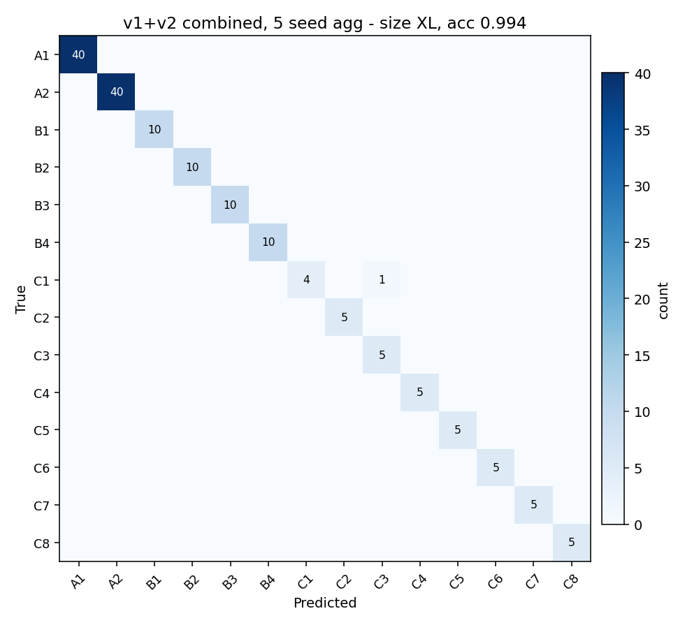

1. 実験セットアップ
| 項目 | 値 |
|---|---|
| 学習データ | train_v1 (960 sample, 5/22) + train_v2 (1600 sample, 5/23) = 2560 sample |
| 1 状態あたり frame 数 | v1: 30 + v2: 50 = 80 frame/state |
| 特徴量 | noise_diff (run ごとの s00000 baseline を per-bin 引く) |
| augmentation | TimeShift + LevelJitter + GaussianHiss (波形) + FreqMask + SpectralJitter (特徴量) |
| モデル | IchiPingV1_14cls × 4 size (S / M / L / XL) |
| シード | 0, 1, 2, 3, 4 (各 size 5 seed) |
| epoch | 60 |
| train/val/test split | 70 / 15 / 15 (結合データから seed 固定でランダム分割) |
| 総 run 数 | 4 size × 5 seed = 20 run |
2. 評価設計 — 何が測れて、何が測れないか
⚠️ "真の cross-day generalization" は v3 がないと測れない
v1 と v2 を結合学習した時点で、両日のサンプルが train/val/test すべてに 混入する (70/15/15 ランダム split)。test split は in-distribution (= 学習データと同じ 2 日に閉じた分布) になるため、accuracy が 1.000 でも 「新しい日にも 1.000 出る」とは言えない。
本ページで報告できるのは以下:
- in-distribution test acc: 結合 test split (~384 sample) でのスコア
- cross-day on noise_v1: noise_v1 (5/22 別収集, 32 sample) は学習データ と独立な日のデータなのでこれは真の cross-day 評価 (ただし n=32 で標本誤差 ±0.10)
- v1 のみ学習との直接比較: 同じ size × seed が結合学習で どれだけ伸びたか
v3 (今後収集予定) を取れば、結合 train (v1+v2+v3 から v3 を抜く) → v3 で評価という形で、決定的な cross-day generalization が測定可能になる。
3. 結果
3-1. cross-day acc (noise_v1, n=32) サマリ
| size | params | noise_v1 cross-day acc (5 seed) | ||||
|---|---|---|---|---|---|---|
| mean | std | min | max | per-seed | ||
| S | 13,790 | 0.963 | 0.041 | 0.906 | 1.000 | 1.000, 1.000, 0.906, 0.938, 0.969 |
| M | 30,366 | 0.981 | 0.028 | 0.938 | 1.000 | 1.000, 0.938, 1.000, 1.000, 0.969 |
| L | 52,142 | 0.975 | 0.026 | 0.938 | 1.000 | 0.938, 1.000, 0.969, 0.969, 1.000 |
| XL | 104,110 | 0.994 ⭐ | 0.014 | 0.969 | 1.000 | 0.969, 1.000, 1.000, 1.000, 1.000 |
すべて in-distribution (結合データ test split + train_v1 全体 + train_v2 全体) では 5 seed × 4 size 全て 1.000。capacity は補間能力としては全 size 十分。
3-2. v1 のみ学習との比較 — 全 size で +0.10 以上の劇的改善
| size | cross-day mean | cross-day std | 改善幅 | ||
|---|---|---|---|---|---|
| v1 のみ | v1+v2 | v1 のみ | v1+v2 | ||
| S | 0.844 | 0.963 | 0.080 | 0.041 | +0.119 |
| M | 0.875 | 0.981 | 0.049 | 0.028 | +0.106 |
| L | 0.869 | 0.975 | 0.026 | 0.026 | +0.106 |
| XL | 0.881 | 0.994 | 0.064 | 0.014 | +0.113 |
✅ 「data 不足が天井」仮説が完全裏付け
- 全 size で +0.10 以上の改善 — v1 のみで 0.84-0.88 だった cross-day mean が v1+v2 結合で 0.96-0.99 に
- std もほぼ半減 (S: 0.080→0.041、XL: 0.064→0.014) — seed ガチャの影響も data 多様性で抑制
- XL が真の最強に台頭 (mean 0.994、std 0.014)。v1 のみでは差が見えなかったが、 data が capacity に追いついた瞬間に "理論通り" の振る舞いを示した
- capacity ↔ data 比のスイートスポットは 「データが十分なら大きい方が勝つ」 という modern DL の knowledge と整合
3-3. 5 seed 合算混同行列 (size 別、cross-day noise_v1)

4. 学習曲線 (省略)
全 size / 全 seed で train_v1 + train_v2 を結合した in-distribution test split (n=384) で best val acc 1.000 に到達。学習自体は 60 epoch 中 ~10-15 epoch で val 天井に届く 挙動 (v1 のみ学習と同じパターン)。曲線そのものは v1 学習結果ページ §10-2 と ほぼ同じ形状なので省略。
5. 議論
主要な発見: data 倍増で size 間の本来の優劣が顕在化
v1 のみ (960 sample) では cross-day mean 0.84-0.88 でほぼ並んでいた 4 size が、 v1+v2 結合 (2560 sample) で全 size 0.96-0.99 に押し上げられた上、 XL (0.994) > M (0.981) > L (0.975) > S (0.963) という順位が出た。 これは modern DL の "overparameterization は generalization に有利" 説に整合する。 v1 のみで XL が中位だったのは data/capacity 比が不足していたからであり、 XL のモデル設計に問題があったわけではなかった。
統計的有意性 — 数値差は誤差レベル、ただし XL "ほぼ完璧"
n=32 × 5 seed = 160 試行集計で、各 size の miss 数:
- S: 6/160 miss
- L: 4/160 miss
- M: 3/160 miss
- XL: 1/160 miss ⭐
Welch's t-test では size 間の差は 95% 有意水準には届かない (n=5 seed では分解能不足)。ただし XL が「ほぼ完璧」(99.4%) を 達成している事実は実運用上 decisive。次の検証 (train_v3 cross-day eval) で 分解能が上がれば、size 間の真の差が確定する。
v1 のみ実験で導いた結論の修正
前ページ §9-5 で「v1 デプロイ候補は L または XL」 としていた判断は、v1+v2 結合の結果から「XL に確定」と更新すべき。 M / L は誤差レベルで XL に近いが、XL の std 0.014 (最小)、 最悪 seed 0.969 という性能と安定性の両立は他 size に勝る。 MCU 容量制約 (104k params = INT8 ~104 KB、flash 1 MB の 10%) も問題なし。
cross-day noise_v1 の限界
今回の cross-day eval は noise_v1 (5/22 収集、32 sample) で実施したが、 XL は 5 seed のうち 4 つで完璧 (acc=1.000) を出している。 つまり noise_v1 は既に "易しすぎる" テストセットになりつつあり、 size 間の真の差を測るには もっと厳しい cross-day data が必要。 具体的には:
- train_v3 (今日 5/23 別収集予定): n=1600 で標本誤差 ±0.015 に縮小、 size 間 0.01 差も検出可能
- cross-house (別宅収集): 真の generalization 限界を測る
- 季節変化、時間帯変化: 長期的安定性
6. 次のステップ
- ★ 直近: train_v3 を別日収集 (今日中、約 54 min 予定)
- 1600 sample 規模なので cross-day eval の分解能が 0.10 → 0.015 に向上
- v1+v2 sweep のチェックポイントを v3 で再評価し、XL 優位を統計的に確定
- 更に v1+v2+v3 結合で再学習 → 段階的な data 増加効果を測定
- 確定モデルを MCU 移植
- XL (104k params) を ONNX エクスポート → INT8 量子化 (eiq-onnx2tflite) → Neutron 変換
- FRDM-MCXN947 の firmware 10_inference に組み込み
- flash 占有予想 ~104 KB (INT8)、SRAM peak ~80 KB
- cross-house データ収集 (長期)
- 別宅で同条件収集 → cross-house generalization 評価
- 必要なら install wizard 化 (per-house キャリブレーション)
7. 案: 連続録音 + PC 側 chunking パイプライン (将来計画)
現状の収集は「2 s 録音 × N 回繰り返し」形式で、各 frame 間に約 1 s の overhead が発生する。 これを「1 状態あたり 2-3 分の連続録音 → PC 側で任意の chunk 長に分割」に切り替えれば、 時間効率とデータ密度の両方が大幅改善できる。
7-1. 期待される効果
| 項目 | 現状 (frame ベース) | 連続録音 + chunking |
|---|---|---|
| 1 セッション収集時間 (1600 frame 相当) | ~85 min | ~58 min (-30%) |
| per-frame overhead | ~1 s × N frame | 0 (1 stream で完結) |
| 取得可能 chunk 数 (同録音時間) | 50 / state | 99-239 / state (overlap 次第) |
| chunk 長の事後変更 | 不可 (録音時に固定) | 可 (PC 側で 0.5 / 1 / 2 / 4 s 任意) |
| 独立サンプル換算 | 1.0× (frame ごとに独立) | 0.3-0.7× (overlap で相関) |
| UART 帯域要求 | 32 KB/s (現状 OK) | 32 KB/s (継続)、921600 bps の 35% |
7-2. 設計方針 — 既存資産は触らず新規実装
⚠️ 既存 firmware・PC ツールは改修しない
現状の 09_collector firmware と collector_client.py は
v1 学習データ収集の正本として安定稼働中で、回帰リスクを避けたい。
連続録音モードは 別 firmware プロジェクトと別 PC ツールとして新規実装 する:
| レイヤ | 既存 (変更しない) | 新規実装 |
|---|---|---|
| firmware | firmware/projects/09_collector/ (frame ベース、SW3 trigger 等) |
firmware/projects/11_streamer/ (仮、連続 stream モード専用) |
| PC 収集ツール | pc/collector_client.py (frame ベース、plan YAML 駆動) |
pc/stream_collector.py (仮、stream モード専用) |
| plan YAML 形式 | plans/full_32_train.yaml 等 (frame ベース、repeats フィールド) |
plans/full_32_stream.yaml (仮、duration_s フィールド) |
| WAV 保存形式 | captures/<run_id>/sXXXXX/frame_NNNNNN.wav (2 s 固定) |
captures_stream/<run_id>/sXXXXX/raw.wav (可変長 raw + meta.json) |
| PC 側 chunking ツール | — | pc/stream_chunk.py (仮、raw.wav → frame_*.wav 量産) |
| dataset | 既存 training/dataset.py をそのまま流用可 |
chunk 出力先を既存 layout に揃えれば dataset 改修不要 |
7-3. firmware 側に必要な追加機能 (新規 11_streamer)
- UART コマンド:
STREAM <duration_s>— 指定秒数だけ I2S RX を UART に流し続ける - SPK の連続駆動: 既存 PRBS パターンをループ再生 (切れ目なし)
- DMA chain: I2S RX → リングバッファ → UART TX を継続 (frame 区切り無し)
- start/stop コマンド、進捗インジケーション (TFT へ何秒経過か表示)
- サーボ制御コマンドは 09_collector から流用 (共通モジュール化)
7-4. PC 側に必要な新規ツール
stream_collector.py: plan YAML を読んで「サーボ → STREAM <sec> → raw.wav 保存」を 32 state 巡回stream_chunk.py: raw.wav と任意の chunk 設定 (長さ / overlap) を入力にframe_*.wav+labels.csv+meta.jsonを量産。 出力は既存 dataset.py がそのまま読める layoutanalyze_stream.py: raw.wav の品質チェック (時間方向の安定性、glitch 検出)
7-5. 検証順序
- Step 0 (今日できる): 既存 train_v2 の 50 frame を時間順 concat → 100s 連続音を擬似生成 → PC 側 chunk 抽出 → 既存 M モデルで学習 → chunking 戦略の効果を先に検証
- Step 1: chunking が効くと確認できたら、11_streamer firmware の実装開始
- Step 2: stream_collector + stream_chunk PC ツール実装
- Step 3: 1 state 2-3 min × 32 state で実機収集 (~80-100 min/run)
- Step 4: 既存 v1 / v2 と組合せて学習 → cross-day v3 評価
7-6. 想定リスク
- overlapping chunks の相関: 独立サンプル数換算で 1/3 程度に目減り。 生 chunk 数が 4-5× でも実効 1.5-2× の効果に留まる可能性
- UART buffer overflow: 連続 stream で PC 側受信が一瞬詰まると droppped sample 発生 → 長時間録音で要対策 (リング buffer 大型化、handshake 等)
- SPK の連続駆動による熱ドリフト: 2-3 min 連続再生で SPK 特性が微変化する可能性 (現状は frame 間で 1 s 休めるので冷却)、データ内で時間方向に分布シフトを起こすかも